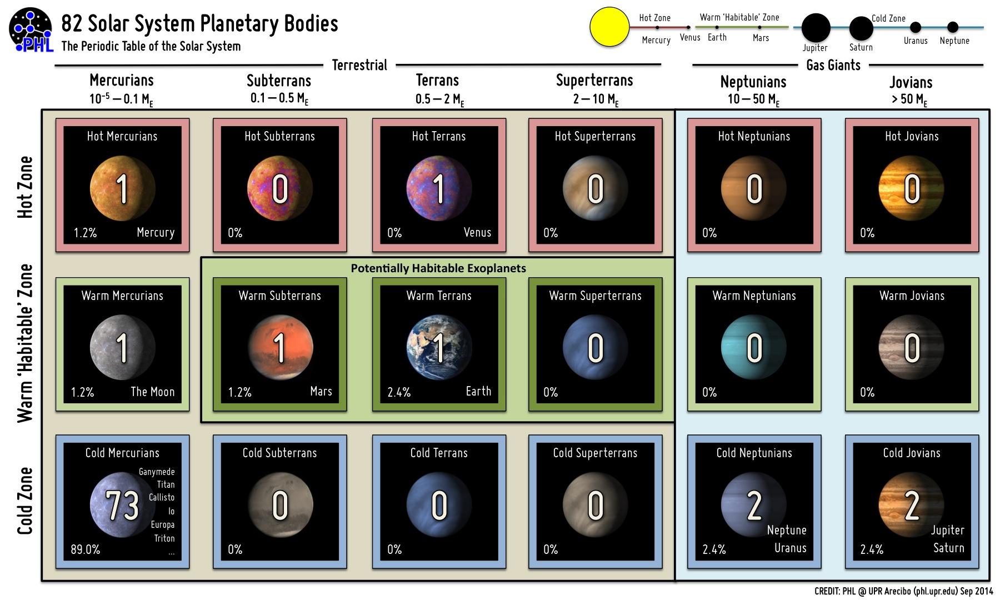

系外行星的分类和可视化¶
系外行星周期表¶
PHL 的 Habitable Exoplanets Catalog 里面有个分类方法是将系外行星按照轨道分为 Hot Zone, Habitale Zone, Cold Zone. 另外按照行星的状态分为 Mercurians, Subterrans, Terrans, Superterrans, Neptunians 和 Jovians.
| 分类 | 太阳系举例 | 质量（地球质量为1） | 描述 |
| Mercurians | 水星，月球 | 10^-5 ~ 0.1 | 小质量、球形 |
| Subterrans | 火星 | 0.1 ~ 0.5 | |
| Terrans | 地球，金星 | 0.5 ~ 2 | |
| Superterrans | 2 ~ 10 | ||
| Neptunians | 天文星，海王星 | 10 ~ 50 | |
| Jovians | 木星，土星 | >50 |
图片来自：PHL CREDIT: PHL @ UPR Arecibo.
